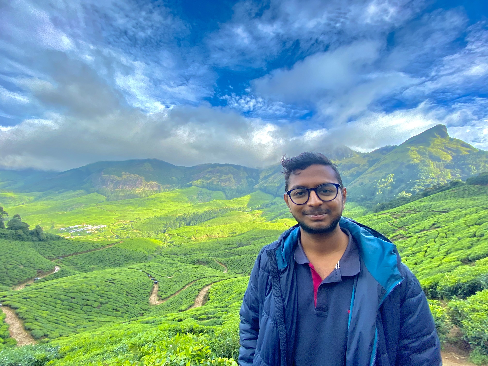

Computer Science Student
Hello! I am Sarvajeeth U K, a computer science student currently pursuing B.Tech at Indraprastha Institute of Information Technology, Delhi. I am passionate about programming, algorithm design, and exploring the intersection of technology and real-world problems.
In an independent capacity, I took charge of the backend development for a project focused on implementing a geo-fencing system for tracked trucks. Using Django, I created a robust API that effectively handled the code logic for setting up and managing geofences. Additionally, I extended the functionality to enable seamless handling of incoming requests. By leveraging Django's powerful framework, I ensured efficient communication and data retrieval within the system.
As the sole contributor, I undertook a project aimed at enhancing truck safety in regions affected by adverse weather conditions. Leveraging web scraping techniques, I gathered real-time weather data. Subsequently, I implemented a system that autonomously sent SMS alerts to drivers operating in these areas, ensuring they were promptly informed of the weather conditions. This initiative aimed to improve overall road safety and minimize potential risks for truck drivers.
As an active member of a dynamic two-person team, I played a key role in developing an automated email system aimed at enhancing customer engagement. Our project involved sending personalized emails to transporters, expressing gratitude for their patronage while providing them with their current position through a scorecard. To accomplish this, I implemented a seamless workflow that generated scorecards in PDF format and seamlessly attached them to the respective transporter's email. By effectively integrating various technologies, we successfully created a reliable and efficient communication channel to strengthen our customer relationships.
During my tenure as a backend developer in the web development project at the Complex Systems Laboratory, we crafted Recipe-DB, a platform with a unique functionality. Our project involved creating a website that generated and sent daily emails containing customized recipes tailored to individual user dietary preferences. My role included utilizing APIs to fetch personalized recipes and orchestrate their delivery via email.
In this ongoing project, I am engaged in developing an Allergen Predictor within the Complex Systems Laboratory. My role involves utilizing BioPython, Machine Learning, and Deep Learning models to predict whether a given FASTA sequence is an allergen or not.
I created a Database of a Cab Application using SQL. I also designed a website for this application and integrated it with my database using Django Framework.
I developed a desktop application that is a replica of the TankStars game using the LibGdx tool.
Email: sarvajeeth21417@iiitd.ac.in